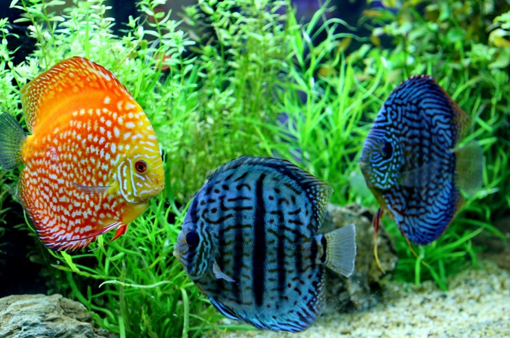

Общие сведения
Название рода состоит из двух греческих слов symphysis – «сросшийся» и odon – «зуб». И это связано с особенностью расположения четырех крайних зубов, находящихся на стыке верхней и нижней челюстей один под другим. Название «дискус» (diskus) появилось чуть позже. Этим словом в Древней Греции обозначали плоский метательный снаряд для соревнований. Дискусы имеют определенную специфику содержания: стабильные параметры воды, повышенная температура, необходимость больших объемов для содержания. Их можно назвать крайне чувствительными, что отпугивает многих аквариумистов от содержания этих прелестных рыб. Невысокий иммунитет дискусов связан с их природным местообитанием. Вода в бассейне реки Амазонка очень мягкая и кислая, содержит большое количество дубильных веществ. В такой воде размножение микроорганизмов затруднено, поэтому дискусы и не способны должным образом реагировать на инфекции. Таким образом, дискусы рекомендуются для содержания опытным аквариумистам, которые прекрасно понимают все процессы, происходящие в аквариуме.
Внешний вид
Тело дискусов имеет дискообразную форму и очень сильно сжато с боков, вплоть до того, что при наблюдении за рыбой со стороны хвостового плавника, можно увидеть два глаза, выпирающих по бокам головы. Глаза эти крупные и располагаются на маленькой голове. Плавники могут быть прозрачные или имеют цветные пятна в одном цвете с туловищем. Хвостовой плавник веерообразной формы, спинной и анальный плавники тянутся от головы до хвоста. Брюшные плавники удлинены. У взрослых самцов дискуса можно наблюдать отчетливо выступающий лоб. Окраска крайне разнообразна и зависит от конкретного вида, но всегда эффектна. Она может меняться в зависимости от состояния рыбы: по всему телу могут появляться или исчезать разноцветные полоски. В аквариуме дискус может вырастать до 25-30 см.

Ареал обитания
Родина дискусов – реки Южной Америки. Они встречаются в бассейне реки Амазонки. Поэтому дискусов можно отыскать на территории таких стран, как Бразилия, Колумбия, Венесуэла и Перу. Биотопы бассейна Амазонки очень интересны и могут претерпевать значительные изменения. В декабре начинается сезон дождей, что приводит к разливу рек, в результате чего затапливаются огромные территории. Паводки приносят много мути, и ранее кристально чистые воды становятся похожи на болото. После окончания затяжных дождей уровень воды падает, она снова становится прозрачной. Повсеместно появляются тихие заводи, в которых вода приобретает темный цвет («черная вода»). В подобных изолированных участках вода отличается крайней степенью мягкости и кислотности. Именно в таких условиях и обитают дискусы в дикой природе. Они предпочитают держаться ближе к берегу, живут в зарослях кустарников. Дно в таких водоемах представляет собой толстый слой из гниющего листового опада. Среди корней прибрежной растительности проходит основное время жизни и нерест рыб. Стоит отметить, что обнаружить дискусов в крупных реках можно очень редко, они предпочитают небольшие ручьи и притоки. В результате подобной изоляция возникли локальные цветовые популяции дискусов, и мы можем наблюдать великолепное разнообразие окрасов этих удивительных рыбок.
Виды
Систематика дискусов претерпевала определенные изменения за время изучения жизни рыб. Вначале всех дискусов относили к одному виду, считая отличия в окраске лишь цветовыми вариациями. Но более детальное рассмотрение особенностей этих рыб привело к выделению трех видов в пределах рода Symphysodon.
Красный дискус (Symphysodon discus)
Этот вид дискуса первым появился в аквариумах любителей. В честь ученого, впервые описавшего данный вид, его часто называют дискусом Хеккеля. Обитают в Южной Америке, в бассейне реки Амазонка: в частности, в Рио-Негро, Рио-Бранку и др. реках. Предпочитают воду, богатую гуминовыми веществами, так называемую «черную воду». Грунт в природных биотопах песочный с большим количеством отмирающих листьев. Форма туловища стандартная, дисковидная, с боков уплощена. Радужная оболочка глаз ярко-красная. Окраска туловища дискуса Хеккеля варьирует от красновато-желтого до коричневого цвета. Продольные волнистые голубые линии пересекают практически все тело рыбы, за исключением груди и середины корпуса. С двух сторон уплощенного тела имеются девять вертикальных темных полос, наиболее ярко выражены (ярче и шире) первая, пятая и девятая полосы. В зависимости от состояния рыбы окраска дискусов может меняться.
Зеленый дискус (Symphysodon tarzoo)
Несмотря на то, что основная окраска тела у рыбки коричнево-желтая, при рассмотрении выловленной в природе особи дискуса с отсветом голубого неба чешуя кажется зеленоватой. Рыбка получила видовой эпитет в честь колумбийской компании из города Летисия, специализирующейся на экспорте рыбы. Именно в его окрестностях был выловлен и описан Symphysodon tarzoo. Стоит отметить, что статус вида эта группа дискусов получила относительно недавно – в 2006 году, на основании анализа ДНК. Обитает зеленый дискус в бассейне реки Амазонка (Перу, Колумбия, Бразилия). Предпочитают «черную воду». Живут возле берегов среди затонувших деревьев и отмирающего листового опада.
Дискус равнополосый (Symphysodon aequifasciatus)
Русское название вида – «Дискус равнополосый». Видовой эпитет состоит из двух латинских слов: aequus – «равный» и fascia – пояс. Название отражает основное морфологическое отличие от других видов – наличие по бокам тела вертикальных полос одинаковой ширины и интенсивности. Крупные стайные рыбки. Для содержания рекомендуется аквариум объемом от 250 литров. Необходимо строго поддерживать оптимальные параметры воды (температуру, кислотность) и не допускать накопления продуктов азотистого обмена. Дискус равнополосый обитает в бассейнах рек Амазонки и Рио-Негро. Предпочитают прозрачную воду. Длина достигает 15 см. Голова и рот небольшие. Тело дисковидное, на нем находится волнистый рисунок. Фоновая окраска рыбы варьирует от коричнево-желтого до красного цвета. Горизонтальные полосы голубого или зеленоватого цвета. По спинному и анальному плавнику проходит полукругом широкая темная полоса. Окраска тела может меняться в зависимости от состояния рыбки. Отличить самку дискуса от самца довольно проблематично.
Уход и содержание
Для содержания дискусов, прежде всего, необходим просторный аквариум. Минимальный объем для небольшой стаи рыб составляет 250 литров, но в идеале это должен быть аквариум от 400 литров и выше. Высота столба воды желательна около 50 см, так как дискус – относительно высокая рыба во взрослом состоянии. При содержании дискусов очень важно обеспечить покой питомцам. Рыбки очень пугливы и постоянные стрессовые факторы могут привести к заболеваниям и даже гибели. Не рекомендуется устанавливать аквариум с дискусами в проходных местах и рядом с источниками сильных звуков. Существуют два основных подхода к внутреннему оформлению аквариума при содержании дискусов. Одни аквариумисты предпочитают классический вариант – аквариум-травник с грунтом и густыми зарослями растений.
Другие считают, что дискусы не нуждаются в дополнительном фоне, и их лучше содержать в аквариуме без грунта, растений и декораций. Последняя точка зрения более практична и связана с тем, что, во-первых, трудно подобрать растения, которые выдерживают оптимальную для дискусов температуру (27-30°С). Во-вторых, любая отмирающая органика в аквариуме – потенциальный источник азотистых соединений, к содержанию которых дискусы очень чувствительны.